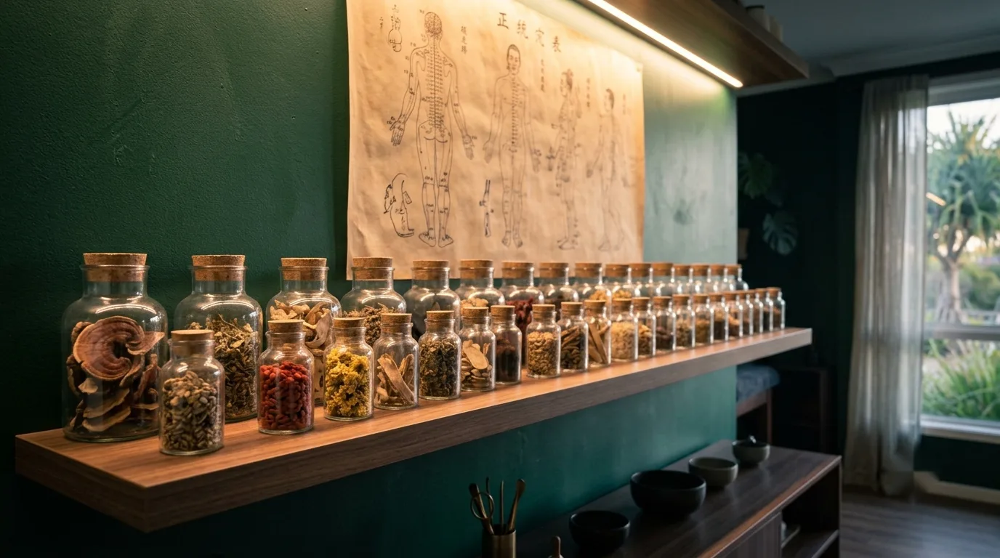
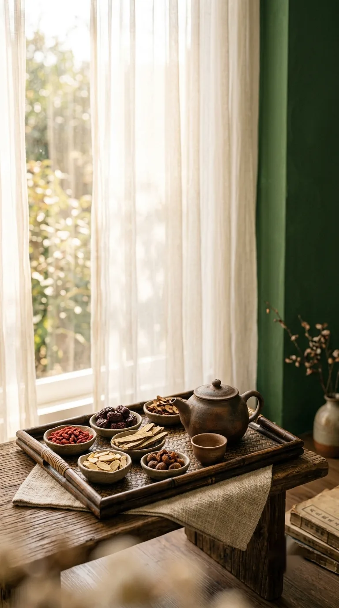
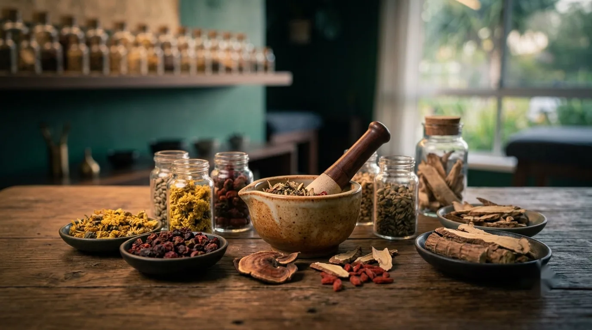

安
Ān · peace
Ān (安) translates as peace or safety, the first character in the practice's name.

Learn about the training, philosophy and approach that shape every treatment.
Meet the practitioner
At Ānshén Acupuncture, your care is led by a dedicated practitioner trained in classical Chinese medicine and acupuncture, with a focus on stress, sleep, and nervous system regulation.
Every consultation is unhurried and conducted in accordance with the professional codes of conduct established by the Chinese Medicine Board of Australia (CMBA) and AHPRA.
Whether you are navigating high stress, chronic sleep disruption, or physical tension, we work collaboratively with you to understand the underlying patterns of disharmony.


Our story
Ānshén Acupuncture is built on a simple premise: care should start with being properly heard. We work with clients across the Gold Coast from our clinic at Mermaid Beach, and every appointment runs to an unhurried, fixed length.
Treatment plans are reviewed and adjusted based on your feedback at every visit, grounded in classical Chinese medicine theory, and clear about what it can and can't treat.
Every intake considers your sleep, stress, energy and mood alongside the physical picture, before any treatment plan is set:
New clients are welcome, no referral required.
See our treatments →The name
Ānshén draws its name from classical Chinese medicine, where the characters translate as "calm the spirit." In practice, that means an assessment that takes stress, sleep and nervous system load as seriously as the physical complaint you came in with.
Ān (安) translates as peace or safety, the first character in the practice's name.
Shén (神) translates as spirit or mind. In Chinese medicine theory, mental and physical health are assessed together rather than as separate systems.
Classical Chinese medicine practised with an understanding of how stress, mood and the nervous system shape the body.

Assessment looks at sleep, stress and nervous system load, not only the site of pain.
We'd be glad to hear what's brought you here, and to talk through whether we can help.